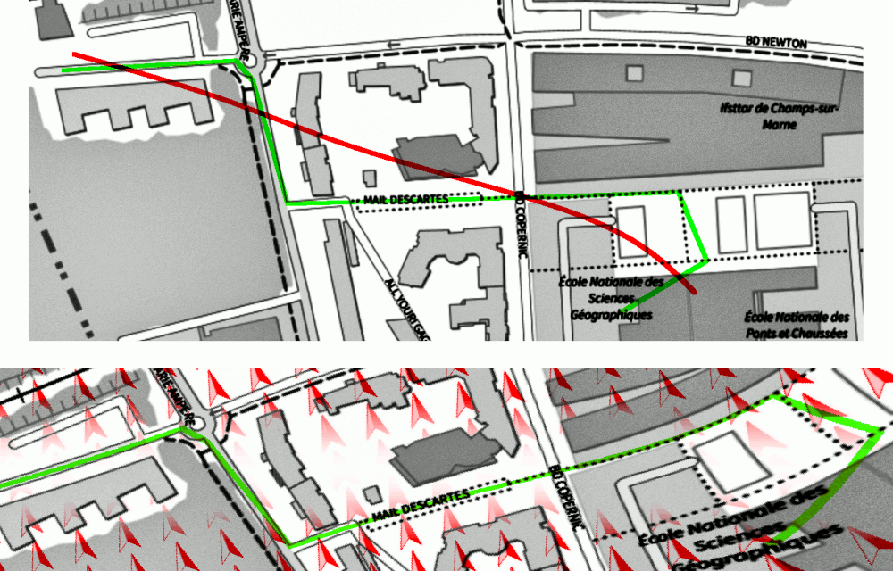
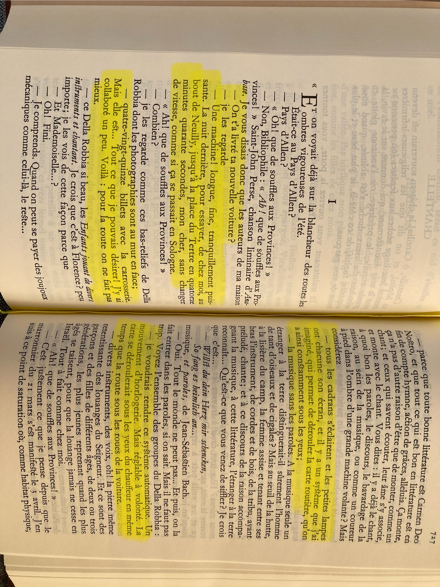
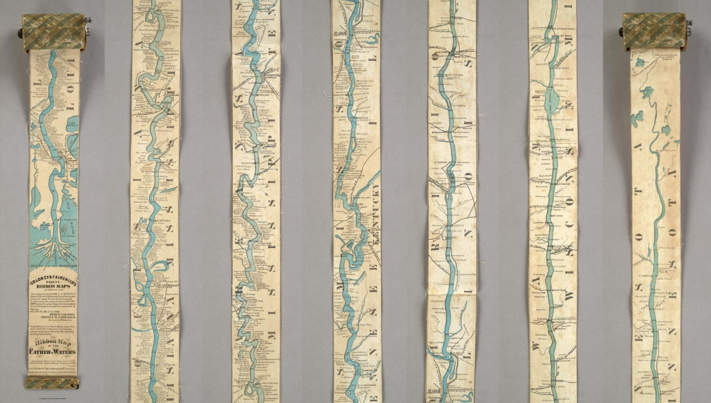
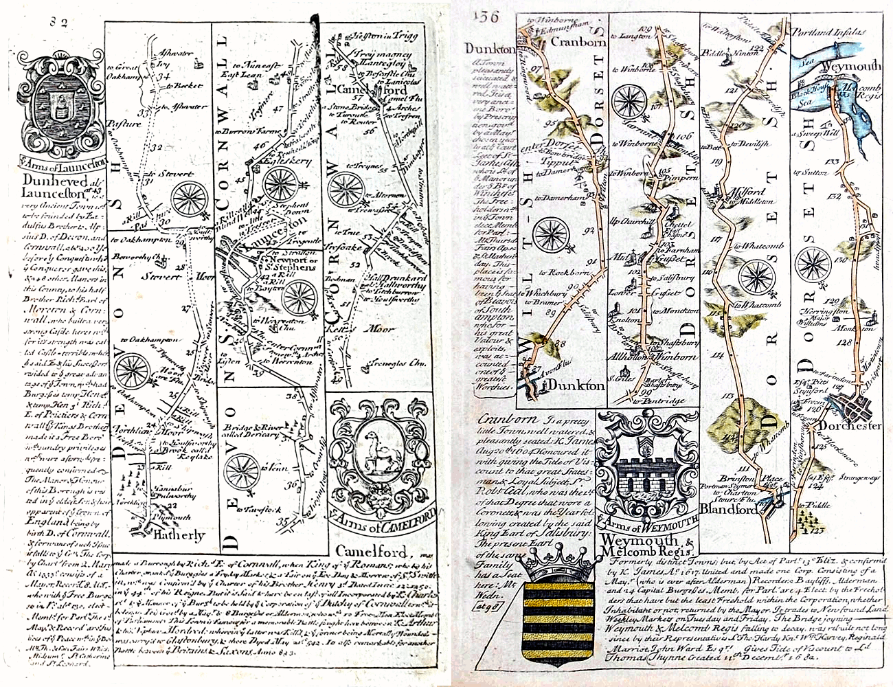
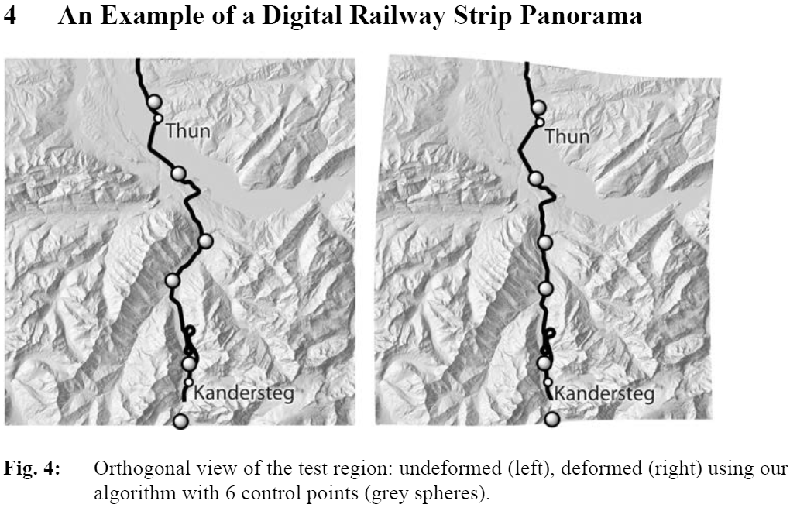
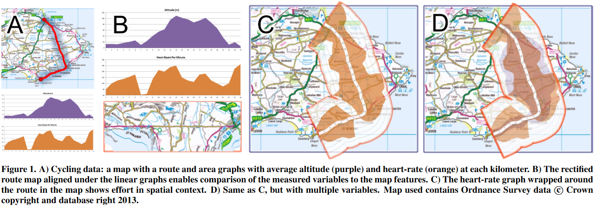
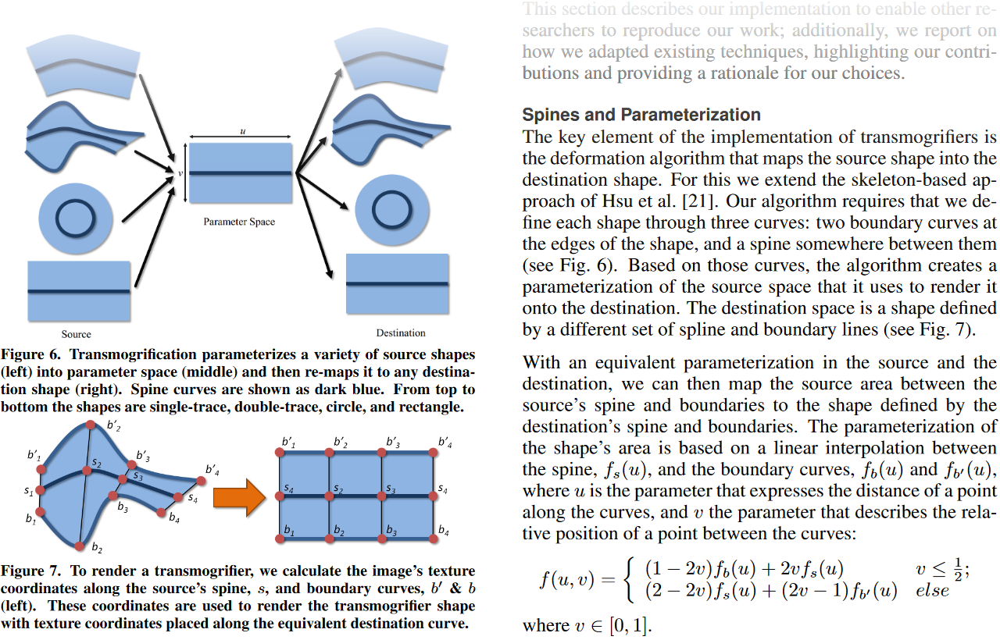

À défaut d'une description détaillée du sujet, voici une illustration de l'idée générale :

À cela s'ajoute quelques éléments de contexte pour bien démarrer le projet recherche ING2.

Source : Allen, roman de Valery Larbaud, publié en 1927.

Source : David Rumsey Map Collection

Source :
https://www.antique-maps-online.co.uk/road-maps.htm

Source : Bernie et al. 2011 - https://berniejenny.info/


Source : http://recherche.enac.fr/~hurter/Transmogrification/transmogrifiers.html (2013)
Source : https://youtu.be/x2KKd1h5c-4 (1080×1080 pixels)